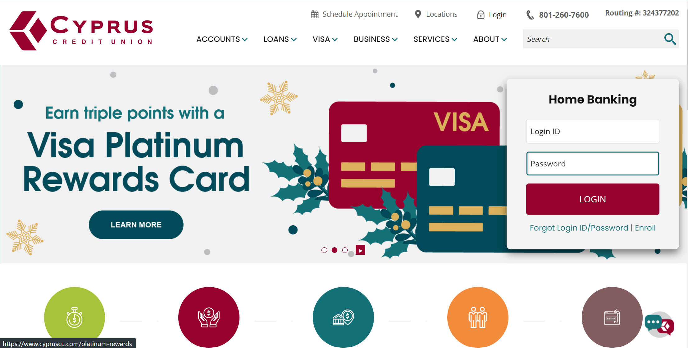
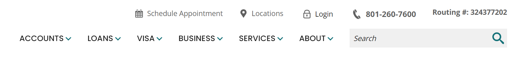
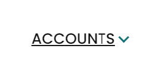

For this assignment we analyzed my work's website:
This blog post is that assignment, but with some images using ALT text and showing how the site looks with longer forms of content that should be broken up into sections.
The site is very straightforward. It knows that most users are going to navigate to it for accessing their home banking, so that section is the biggest and most prominent. It does double as advertising as well showing loan and savings rates though this is slightly further down. At the top it has common needed items such as their phone number, routing number, etc.
The site has quite a bit going on since it has a lot it needs to do. But it marks everything clearly and looks nice and organized. If you’re looking to schedule an appointment it might be easy to miss that it’s above the navigation bar. Additionally there’s two login spots for home banking, a small ‘Login’ at the top and then the bigger box in the middle of the page. Both do the same thing, and may seem a bit redundant to have the smaller one when the space could be used elsewhere. Having one item appear in multiple places is useful for people who think differently or use the site differently, but is the main source of complaints as some people may think they do different things since they’re in different places. 
Visually the site looks very nice, it has a great color scheme that draws users' eyes to important functions such as the login button. Looks nicely organized, and is not too cluttered.
Like mentioned above the site is pretty straightforward, it follows the usual design that most are familiar with. A navigation system that you can click tabs to get to where you need, a login button being a prominent point on the page, search bar at the top, slides to show new features or news, etc. It makes it easy to navigate.
Combining the two and looking more after the fact, reflectively I would use this site again if I had to. It seems well organized, pleasing to the eye, and not overwhelmingly complex to use which usually is the case for people to avoid using websites unless forced.
Many of these Signifiers double as an Affordance when it comes to web design. Most things are labeled signifying what to do with either the button or input box. An affordance clue is when you hover over an icon the cursor can change the cursor to a pointing finger, a clue that it can be clicked, typed in by giving a highlight, or some other sort of indication like an underlining of the text.
